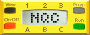

|  Overview | Events | Contents | Master Index |
| RCX2 | Scout |
| Event() | Manually triggers the specified events. | ||||||
| SetEvent() | Configure an event (a number from 0 to 15) to use the specified source and type. | ||||||
| CalibrateEvent() | Calibrate the event by taking an actual sensor reading and then applying the specified ratios. | ||||||
| SetUpperLimit() | Set the upper limit for the event. | ||||||
| SetLowerLimit() | Set the lower limit for the event. | ||||||
| SetHysteresis() | Set the hysteresis for the event. | ||||||
| SetClickTime() | Set the click time for the event. | ||||||
| SetClickCounter() | Set the click counter for the event. | ||||||
| SetSensorClickTime() | Set the click time used to generate events from the light sensor. | ||||||
| SetCounterLimit() | Set the limit for counter n. | ||||||
| SetTimerLimit() | Set the limit for timer n. |
VALUES / QUERIES
| ActiveEvents() | Return the set of events that have been triggered for a given task. | ||||||
| CurrentEvents() | Return the set of events that have been triggered for the active task. | ||||||
| ClearEvent() | Clear the configuration for the specified event. | ||||||
| ClearAllEvents() | Clear the configurations for all events. | ||||||
| EventState() | Return the state of a given event. | ||||||
| UpperLimit() | Return the current upper limit for the specified event number. | ||||||
| LowerLimit() | Return the current lower limit for the specified event number. | ||||||
| Hysteresis() | Return the current hysteresis for the specified event number. | ||||||
| ClickTime() | Return the current click time for the specified event number. | ||||||
| ClickCounter() | Return the current click counter for the specified event number. |
Event monitoring is implemented with the monitor statement, which has a syntax very similar to acquire:
monitor ( events ) body monitor ( events ) body handler_listWhere handler_list is one or more handlers of the form catch ( catch_events ) handlerThe last handler in a handler list can omit the event specification: catch handlerEvents is a constant that determines which events should be monitored. |
|
|
|
The monitor statement will execute the body while monitoring the specified events. If any of the events occur, execution will jump to the first handler for that event (a handler without an event specification handles any event). If no event handler exists for the event, then control will continue at the statement following the monitor statement. |
The following example waits for 10 seconds while monitoring events 2, 3, and 4 for RCX2:
monitor( EVENT_MASK(2) | EVENT_MASK(3) | EVENT_MASK(4) )
{
Wait(1000);
}
catch ( EVENT_MASK(4) )
{
PlaySound(SOUND_DOWN); // event 4 happened
}
catch
{
PlaySound(SOUND_UP); // event 2 or 3 happened
}
|
| RCX2 provides an extremely flexible event system. There are 16 events, each of which can be mapped to one of several event sources (the stimulus that can trigger the event), and an event type (the criteria for triggering). A number of other parameters may also be specified depending on the event type. For all of the configuration calls an event is identified by its event number - a constant from 0 to 15.
|
Legal event sources are sensors, timers, counters, or the message buffer. An event is configured by calling SetEvent(event, source, type), where event is a constant event number (0-15), source is the event source itself, and type is one of the types shown below (some combinations of sources and types are illegal).
The first four event types make use of a sensor's boolean value, thus are most useful with touch sensors. For example, to set event #2 to be triggered when a touch sensor on port 1 is pressed, the following call could be made: SetEvent(2, SENSOR_1, EVENT_TYPE_PRESSED);In order for EVENT_TYPE_PULSE or EVENT_TYPE_EDGE to be used, the sensor must be configured in the SENSOR_MODE_PULSE or SENSOR_MODE_EDGE respectively. |
| EVENT_TYPE_FASTCHANGE should be used with sensors that have been configured with a slope parameter. When the raw value changes faster than the slope parameter an EVENT_TYPE_FASTCHANGE event will be triggered.
|
The next three types (EVENT_TYPE_LOW, EVENT_TYPE_NORMAL, and EVENT_TYPE_HIGH) convert an event source's value into one of three ranges (low, normal, or high), and trigger an event when the value moves from one range into another. The ranges are defined by the lower limit and upper limit for the event. When the source value is
|
The following example configures event #3 to trigger when the sensor on port 2's value goes into the high range. The upper limit is set for 80, and the lower limit is set for 50. This configuration is typical of how an event can be triggered when a light sensor detected a bright light. SetEvent(3, SENSOR_2, EVENT_TYPE_HIGH); SetLowerLimit(3, 50); SetUpperLimit(3, 80);A hysteresis parameter can be used to provide more stable transitions in cases where the source value may jitter. Hysteresis works by making the transition from low to normal a little higher than the transition from normal to low. In a sense, it makes it easier to get into the low range than get out of it. A symmetrical case applies to the transition between normal and high. |
| A transition from low to high back to low will trigger a EVENT_TYPE_CLICK event, provided that the entire sequence is faster than the click time for the event. If two successive clicks occur and the time between clicks is also less than the click time, then an EVENT_TYPE_DOUBLECLICK event will be triggered. The system also keeps track of the total number of clicks for each event.
|
| The last event type, EVENT_TYPE_MESSAGE, is only valid when Message() is used as the event source. The event will be triggered whenever a new message arrives (even if its value is the same as a previous message).
|
The monitor statement and some API functions (such as ActiveEvents() or Event()) need to handle multiple events. This is done by converting each event number to an event mask, and then combining the masks with a bitwise OR. The EVENT_MASK(event) macro converts an event number to a mask. For example, to monitor events 2 and 3, the following statement could be used:
monitor(EVENT_MASK(2) | EVENT_MASK(3)) |
The Scout provides 15 events, each of which has a predefined meaning as shown in the table below.
The first four events are triggered by touch sensors connected to the two sensor ports. EVENT_LIGHT_HIGH, EVENT_LIGHT_NORMAL, and EVENT_LIGHT_LOW are triggered by the light sensor's value changing from one range to another. The ranges are defined by SetSensorUpperLimit, SetSensorLowerLimit, and SetSensorHysteresis which were described previously.
|
| EVENT_LIGHT_CLICK and EVENT_LIGHT_DOUBLECLICK are also triggered by the light sensor. A click is a transition from low to high and back to low within a certain amount of time, called the click time.
|
| Each counter has a counter limit. When the counter exceeds this limit, EVENT_COUNTER_0 or EVENT_COUNTER_1 is triggered. Timers also have a limit, and they generate EVENT_TIMER_0, EVENT_TIMER_1, and EVENT_TIMER_2.
|
| EVENT_MESSAGE is triggered whenever a new IR message is received. |
| FUNCTIONS / COMMANDS |
|
| Event(events) | Overview | Top | ||||||
Manually triggers the specified events. This can be useful in testing event handling of the program, or in other cases simulating an event based on other criteria. Note that the specification of the events themselves is slightly different between RCX2 and Scout. RCX2 uses the EVENT_MASK macro to compute an event mask, while Scout has predefined masks. Event(EVENT_MASK(3)); // triggering an RCX2 event | |||||||
| SetEvent(event, source, type) | Overview | Top | ||||||
Configure an event (a number from 0 to 15) to use the specified source and type. Both event and type must be constants, and source should be the actual source expression. SetEvent(2, Timer(0), EVENT_TYPE_HIGH); | |||||||
| CalibrateEvent(event, lower, upper, hyst) | Overview | Top | ||||||
Calibrate the event by taking an actual sensor reading and then applying the specified ratios - lower, upper, and hyst - to determine actual limits and hysteresis value. The specific formulas for calibration depend on sensor type and are explained in the LEGO SDK. Calibration is not instantaneous - EventState() can be checked to determine when the calibration is complete (typically about 50ms). CalibrateEvent(2, 50, 50, 20); | |||||||
| SetUpperLimit(event, limit) | Overview | Top | ||||||
Set the upper limit for the event, where event is a constant event number and limit can be any expression. SetUpperLimit(2, x); // set upper limit for #2 to x | |||||||
| SetLowerLimit(event, limit) | Overview | Top | ||||||
Set the lower limit for the event, where event is a constant event number and limit can be any expression. SetLowerLimit(2, x); // set lower limit for #2 to x | |||||||
| SetHysteresis(event, value) | Overview | Top | ||||||
Set the hysteresis for the event, where event is a constant event number and value can be any expression. SetHysteresis(2, x); | |||||||
| SetClickTime(event, value) | Overview | Top | ||||||
Set the click time for the event, where event is a constant event number and value can be any expression. The time is specified in increments of 10ms, so one second would be a value of 100. SetClickTime(2, x); | |||||||
| SetClickCounter(event, value) | Overview | Top | ||||||
Set the click counter for the event, where event is a constant event number and value can be any expression. SetClickCounter(2, x); | |||||||
| SetSensorClickTime(value) | Overview | Top | ||||||
Set the click time used to generate events from the light sensor. Value should be specified in increments of 10ms, and may be any expression. SetSensorClickTime(x); | |||||||
| SetCounterLimit(n, value) | Overview | Top | ||||||
Set the limit for counter n. N must be 0 or 1, and value may be any expression. SetCounterLimit(0, 100); // set counter 0 limit to 100 | |||||||
| SetTimerLimit(n, value) | Overview | Top | ||||||
Set the limit for timer n. N must be 0, 1, or 2, and value may be any expression. SetTimerLimit(1, 100); // set timer 1 limit to 100 | |||||||
| VALUES / QUERIES |
|
| ActiveEvents(task) | Overview | Top | ||||||
Return the set of events that have been triggered for a given task. x = ActiveEvents(0); | |||||||
| CurrentEvents() | Overview | Top | ||||||
Return the set of events that have been triggered for the active task. x = CurrentEvents(); | |||||||
| ClearEvent(event) | Overview | Top | ||||||
Clear the configuration for the specified event. This prevents it from triggering until it is re-configured. ClearEvent(2); // clear event #2 | |||||||
| ClearAllEvents() | Overview | Top | ||||||
Clear the configurations for all events. ClearAllEvents(); | |||||||
| EventState(event) | Overview | Top | ||||||
Return the state of a given event. States are 0: Low, 1: Normal, 2: High, 3: Undefined, 4: Start calibrating, 5: Calibrating in process. x = EventState(2); | |||||||
| UpperLimit(event) | Overview | Top | ||||||
Return the current upper limit for the specified event number. x = UpperLimit(2); // get upper limit for event 2 | |||||||
| LowerLimit(event) | Overview | Top | ||||||
Return the current lower limit for the specified event number. x = LowerLimit(2); // get lower limit for event 2 | |||||||
| Hysteresis(event) | Overview | Top | ||||||
Return the current hysteresis for the specified event number. x = Hysteresis(2); | |||||||
| ClickTime(event) | Overview | Top | ||||||
Return the current click time for the specified event number. x = ClickTime(2); | |||||||
| ClickCounter(event) | Overview | Top | ||||||
Return the current click counter for the specified event number. x = ClickCounter(2); | |||||||